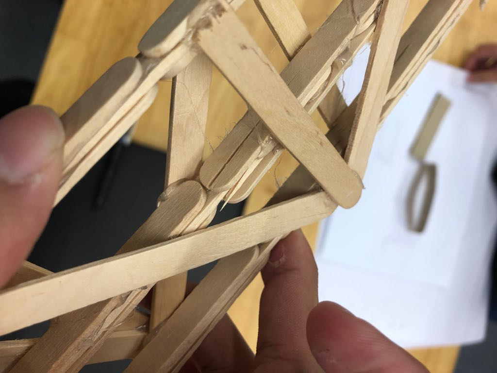
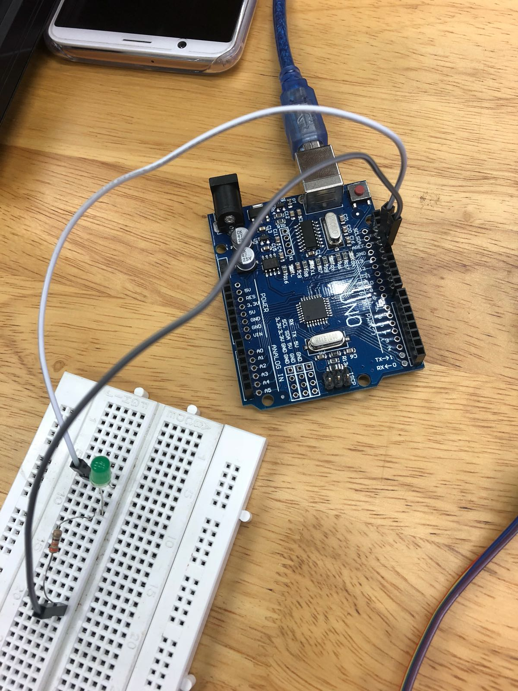
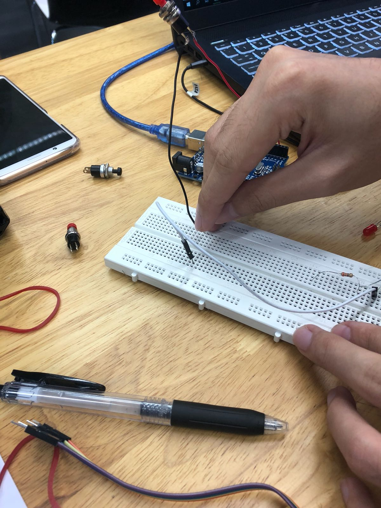
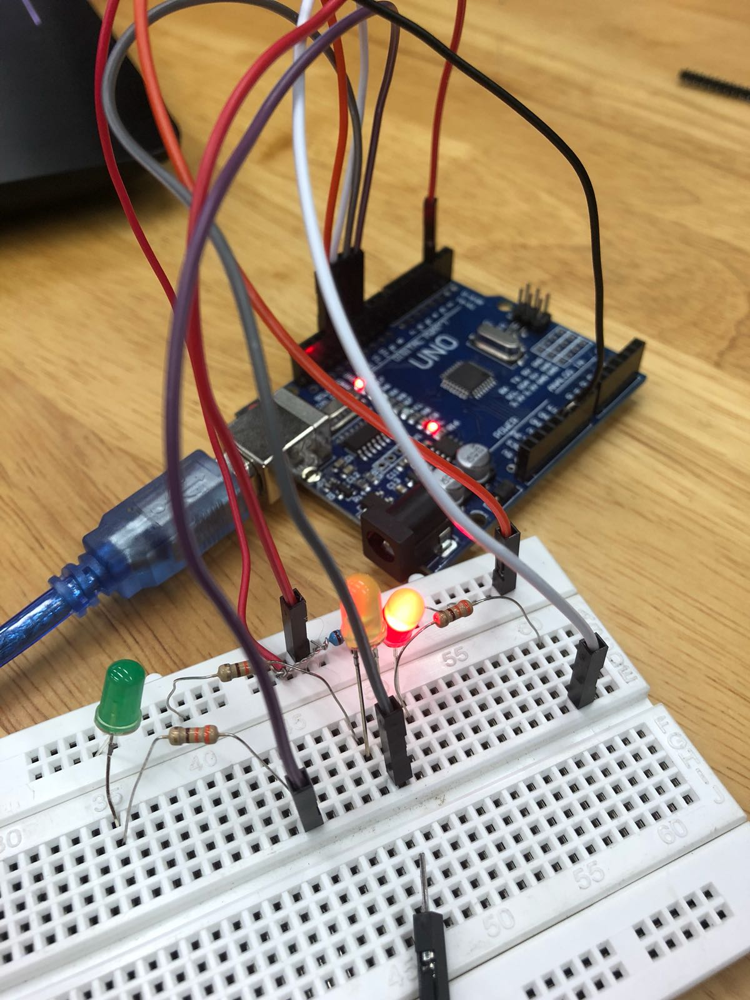
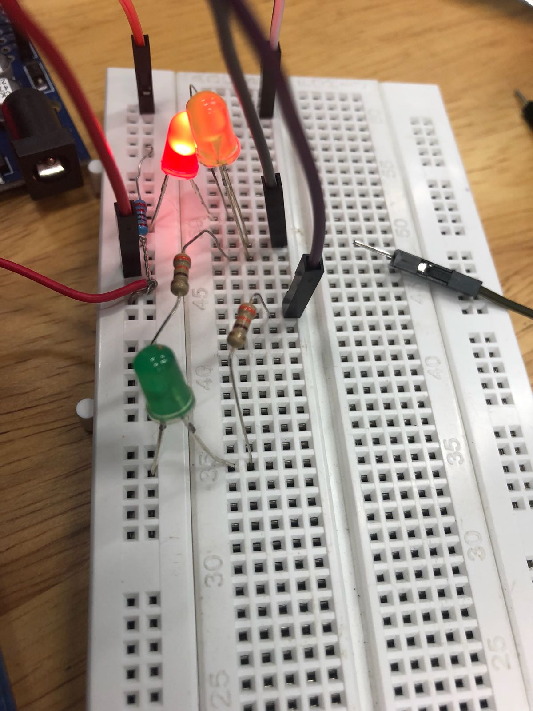
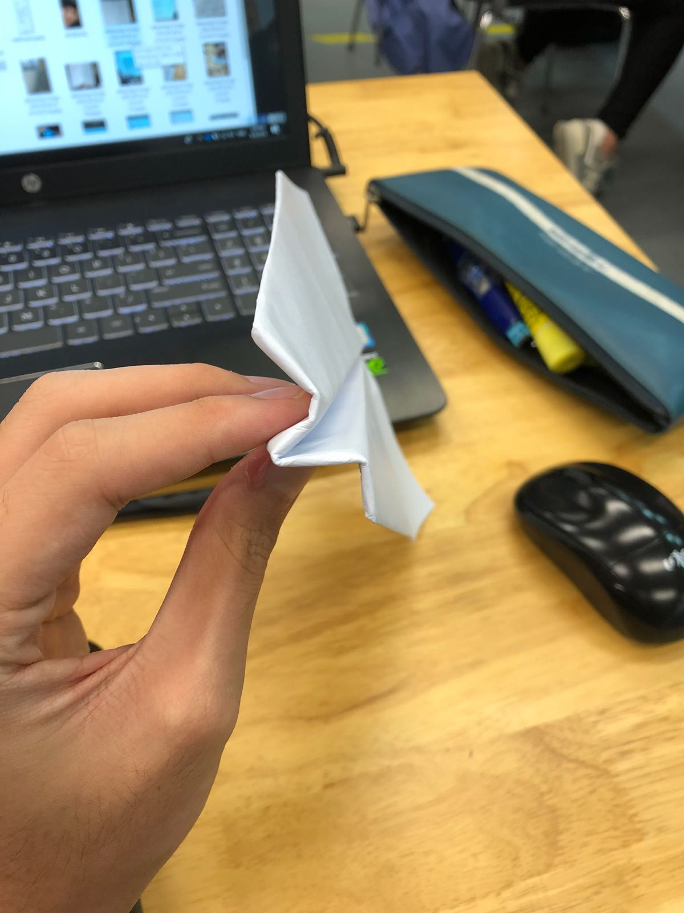
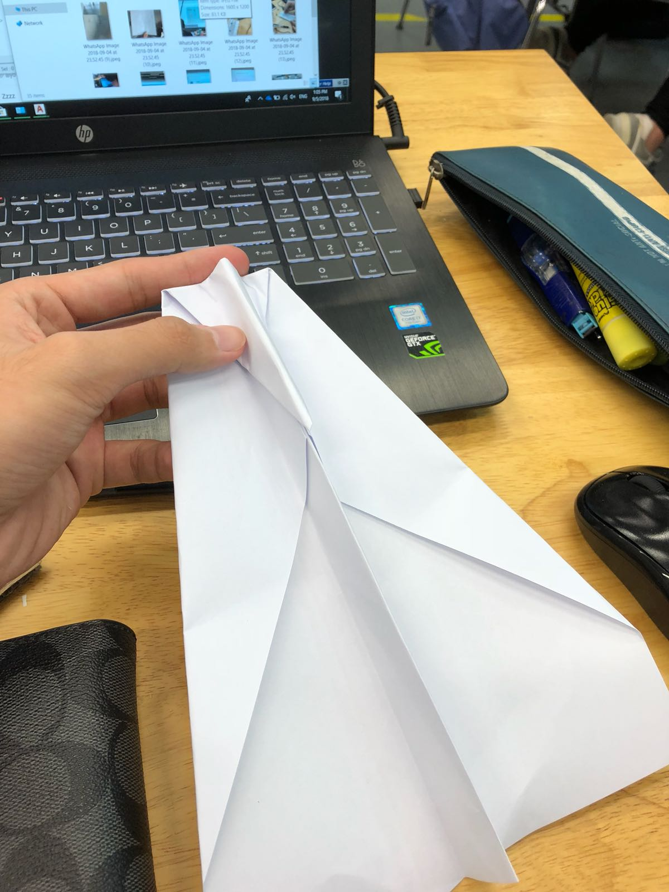

Welcome to Journal!
-arduino not working when verify, “input void set up” not recognisable -googled the solution to this problem
Day1- ice breaker activity (Bridge making)
Our team had just met and was getting to know how each of us think and work, building the bridge was more of getting to know how to work with each other, rather than coming up with a super sturdy and strong bridge to win the mini competition
During the bridge making, we had a little bit of conflicting ideas and troubles understanding each other’s different ideas but finally, after sketching what we envision and proposed, we came up with a middle-ground solution that combines each of our individual ideas.

Second activitity: arduino
Our group have a little bit of an advantage as most of us have experience in circuitry and arduino programming for this activity.

The activity was to make and programme the LEDs in such a way that it replicates a traffic light, when a button is pushed
After several attepmts, we thought we were successful as the leds we lighting up, but we realise that it worked EVEN WITHOUT THE SWITCH being pressed.
As it turns out, we had connected out 10K ohms resistor wrongly and the LED wrongly.

The solution was to split the LED and resistor, connecting the resistor to the ground AND switch to the input pin
insert the diagram your brother drew
And our final product is a success!!!


Final activity of day 1, to deliver a message across a distance without crumpling the paper.
During our brain storm, the most probable idea was to build a paper airplane. That could cover both distance and accuracy.
We build the design based off a design during childhood
We tried going 2 designs for distance and 1 for accuracy and only manage to conquer distance


Made 4 September 2018